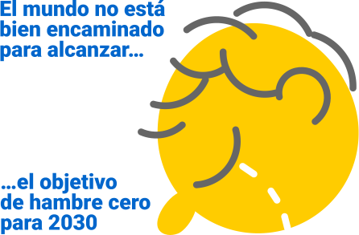

Otros objetivos
110 medidas aprobadas en el Consejo de Ministros, durante el periodo de junio a diciembre de 2018, que impactan directamente en torno a 60 de las metas de los Objetivos de Desarrollo Sostenible.
Apostar por la mejora de la agricultura a través de prácticas agrícolas sostenibles y resilientes sin perder la diversidad genética de las semillas, que ayude a poner fin a la malnutrición.
En este sentido se ha apostado por garantizar los derechos de alimentación de los niños y niñas también en época de vacaciones. Medidas como la puesta en marcha de un servicio de desayuno, actividades de carácter lúdico, comedor o bolsa de cena. Así mismo, se han implementado sistemas de suministro de alimentos para personas desfavorecidas por un importe de 100 millones de euros.
Medidas en apoyo al sector vitivinícola de España, o el posicionamiento claro y explícito por una PAC más vinculada a laspolíticas agrarias sostenibles asícomo la ampliación y mejora de los seguros agrarios combinados, en su 40º plan, o las contribuciones voluntarias a organismos que investigan sobre la protección y mejora de la agricultura.
Cabe destacar, así mismo, la apuesta por la participación de las mujeres rurales en el emprendimiento económico y social.